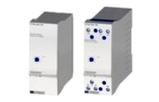
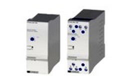
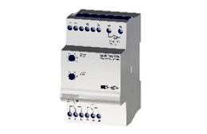
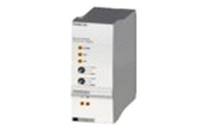
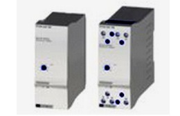
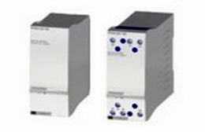
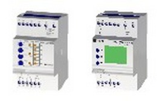

Se utilizan para el control de nivel de líquidos conductivos en todo tipo de depósitos, pozos, estanques, etc.
Los modelos se diferencian por combinaciones de las siguientes características:
- Rango de sensibilidad.
- Modalidad de control.
- Cantidad y tipo de contactos de salida.
Control de máximo y/o mínimo nivel en líquidos conductores.
Aplicación general.
Sensibilidad: 10..100Kohms.
Tensión/Intensidad (sondas): 24 VCA/4 mA.
Formatos:
PNSA enchufable base undecal.
DNSA rail Din fondo panel.
SNSA rail DIN superficial.
PNEA-DNEA

Apropiado para líquidos con alta resistividad: agua destilada, desmineralizada. Control de máximo y/o mínimo nivel. Dos gamas de sensibilidad: 10..100 Kohms / 200 Kohms..4,7 Mohms
Tensión/Intensidad (sondas): 24VCA/4mA.
Formatos:
PNSA enchufable base undecal.
DNSA rail Din fondo panel
PNDA-DNDA

Control automático de nivel de un pozo en función del nivel del depósito
Sensibilidad: 10..100 Kohms.
Tensión/Intensidad (sondas): 24 VCA/4mA
PNGA-DNGA
Control de nivel doble. Dos controles de nivel independientes.
Contactos NA.
Máximo y/o mínimo nivel.
Sensibilidad: 10..100 Kohms.
Tensión/Intensidad (sondas): 24 VCA/4 mA
SNDA

Dos controles de nivel independientes, con un relé NA/NC asociado a cada uno de ellos.
Contactos NA/NC.
Máximo y/o mínimo nivel.
Sensibilidad: 10..100 Kohms.
Tensión/Intensidad (sondas): 24 VCA/4 Ma.
PNWB

Control alternativo de 2 bombas.
Mando por sensor de nivel.
Modos trabajo: Paro-Automático-Manual.
Sensores con contactos libres de potencial.
Son necesarios 3 sensores para realizar la maniobra.
PTBA

Control alternativo de 2 bombas.
Mando por tensión de alimentación.
Gamas: 0,15..3 S.
No necesita sensor. Se intercala en la línea de paro-marcha de la bomba.
PNAS

Relé amplificador para sensores capacitivos.
Control máximo y/o mínimo nivel.
Ajuste de sensibilidad en el sensor.
Tensión/Intensidad (sondas: 24 VCC/15 mA).
SNIA-SIN

SNIA es un rele de nivel con 1..5 puntos de control.
Se combina con el sensor IMN MPS.
Funciones: Llenado, vaciado, set-point.
Tres relés NA independientes.
Visualización del nivel mediante 5 leds amarillos.
Temporización detección/reposición, ajustable 0..30 s
SIN es un controlador de nivel con 1..80 puntos de control.
Se combina con el sensor IMN MPS.
Funciones configurables por el usuario.
Tres relés NA independientes.
Lectura directa en unidades de capacidad o volumen.
Temporización 0,01 S..999,9 H.
Tres relés de salida configurables.